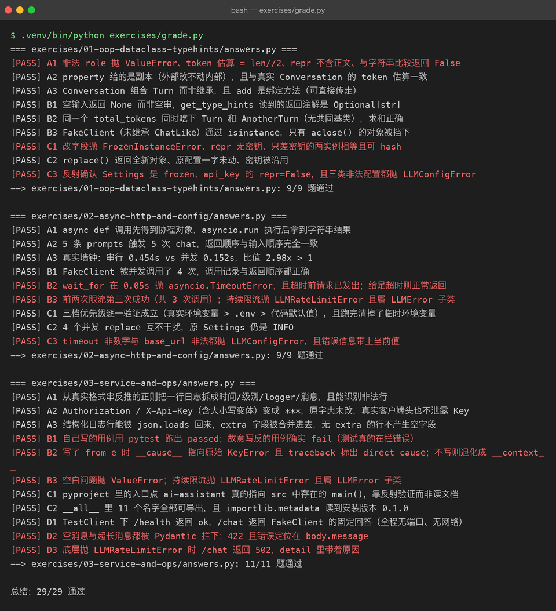

Exercises — Project 02 配套练习题与判卷工具
先说清楚一件事：这份
answers.py跑通，代表的是参考答案能跑通，不代表你学会了。 生成它的人（AI）不会替你勾选任何进度 —— 「是否掌握」只有你自己写完、讲清楚之后才算数。 仓库里所有学习状态默认 ⬜，勾选权始终在你手里。
怎么用
- 先看 milestone（
../milestones/），把概念过一遍 - 自己在练习目录里写（建议建
01_answers.py，别覆盖answers.py） - 卡住再看
answers.py—— 只准看卡住的那一个函数，不要整份抄 - 做完回
../LEARNING.md答自测题 —— 那里考的是「为什么」，答题要点写在折叠块里
目录
| 目录 | 覆盖 Milestone | 题数 |
|---|---|---|
| 01-oop-dataclass-typehints | M00 类与 OOP / M03 类型注解 / M04 dataclass / M05 配置对象 | 9 |
| 02-async-http-and-config | M01 async/await / M02 异步 HTTP / M05 配置与环境 | 9 |
| 03-service-and-ops | M06 日志 / M07 测试与调试 / M08 打包 / M09 FastAPI | 11 |
合计 29 题。
判卷
cd projects/02-engineering-ai-assistant
.venv/bin/python exercises/grade.py # 人读的输出
.venv/bin/python exercises/grade.py --json # 机器可读（CI 用）
.venv/bin/python exercises/grade.py --selftest # 验证离线哨兵还灵不灵判卷出 .txt 留证：
.venv/bin/python exercises/grade.py > exercises/out/grade.txt 2>&1判卷的四条规则
- 每份
answers.py都套着_offline_guard.py跑，退出码必须为 0 - 每道题必须真的打印
[PASS] <题号>—— 预期题号从同目录README.md扫出来。文档是题源，答案只是答案，所以「README 写了但答案没解」也算 FAIL - socket 层熔断：答案脚本只要试图连出本机，就被
NetworkAccessDenied打断 - 除此之外做一次静态提醒（读真实 Key / 硬编码 api 域名），只提示不判 FAIL
为什么不用「符号黑名单」判联网
一开始判卷脚本是这样写的：扫到 httpx.AsyncClient(、DeepSeekClient( 就报警。两个问题：
- 假阳性：03 组有一道题要验证「Key 不会泄露到日志里」，做法是构造一个真实客户端、读它的 headers 再脱敏对比 —— 构造对象不发任何请求，但黑名单照样把它打出来
- 假阴性：黑名单拦不住「偷偷连一个内网地址」
改成在 socket.socket.connect / socket.create_connection 上装闸门之后才是真约束。--selftest 就是这条约束的自证：它拿一个「先打印假 [PASS] Z9，再尝试连接外网」的脚本跑一遍，确认进程被拦下 —— 顺便也证明了「只看 [PASS] 标记」是不够的，必须看退出码。
本次判卷结果（真实运行）

哨兵自测同样是从真实进程里跑出来的：

跑通 29/29。这是参考答案的成绩，不是你的成绩。